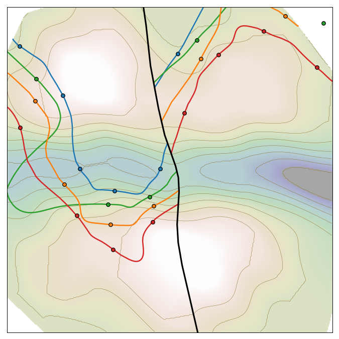
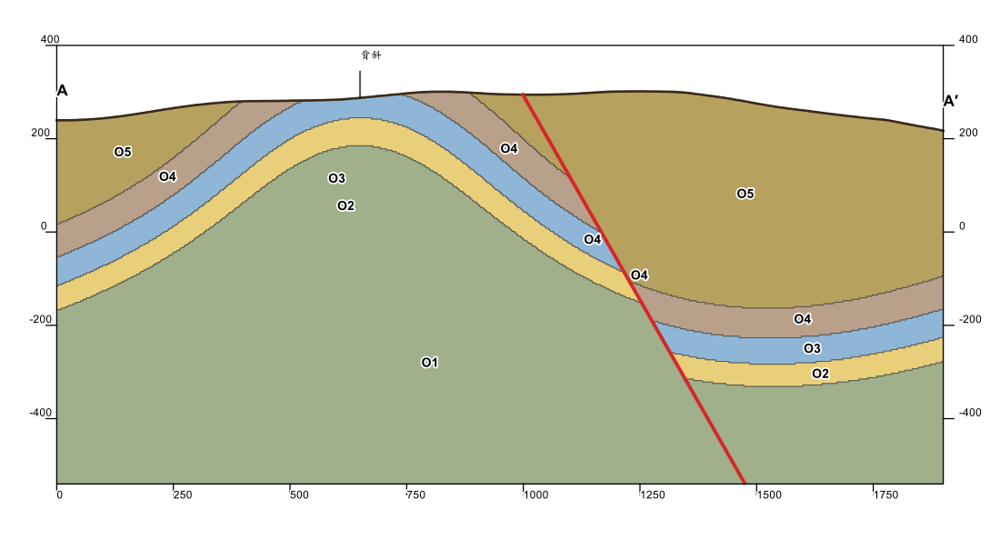

Fig. 1 – Sample point 11 (O5/O4, 44°/241°). Brown: topographic contours. Blue dashed: structure contours of the bedding plane. Red dots: crossings at equal elevation. Red line: predicted outcrop line (F = 0).
Predicts where stratigraphic boundaries crop out from outcrop observations (dip / dip direction) and a DEM, using the structure-contour method, then builds a geological map from your edited lines and the faults, and a 3D geological model with geological sections.
| ① Outcrop points + DEM + faults | → | ② Trace predicted boundary lines (temporary layer) | → | ③ Edit the lines in QGIS | → | ④ Build geological map (geology polygons) | → | ⑤ 3D model and sections (GeoPackage, CAD, 3D viewer) |
Both tools are in the menu Plugins ▸ AutoTrace Stratigraphic Boundary, on the toolbar, and in the Processing Toolbox (group Geological mapping), so they can be used in batch mode and in models.
Over a short distance a bedding boundary can be treated as a plane. An outcrop point P0(x0, y0) with dip δ and dip direction α lies on the ground, so its elevation z0 is read from the DEM. The plane through it is
zs(x, y) = z0 − tan δ · [ (x − x0) sin α + (y − y0) cos α ]
Its structure contours (lines of equal elevation on the plane) run parallel to the strike, and their spacing is h / tan δ for a contour interval h. Wherever a structure contour crosses a topographic contour of the same elevation, the boundary crops out. Joining those crossings gives the outcrop trace.
The plugin does this continuously, not just at contour levels: it computes the difference between the ground and the plane on every DEM cell,
F(x, y) = DEM(x, y) − zs(x, y)
and follows the line F = 0 to both sides of the point (GDAL contour generator, linear interpolation between cells).

So the line bends up valleys and around ridges as the topography requires (the "rule of Vs"). A gentle dip makes the line follow the contours closely. A vertical bed gives a straight line.
Points that have the same upper and lower unit codes and lie in the same fault block belong to the same boundary. Their planes are combined into one smooth surface by inverse-distance-weighted blending of the planes:
z(x, y) = Σ wi zi(x, y) / Σ wi, wi = 1 / dip
where zi is the plane of point i, di the distance to it and p the blending power (default 4). The surface passes exactly through every point and keeps that point's own dip and dip direction there. Between points the attitude changes gradually, so the line can bend around a fold hinge or nose. One F = 0 line then runs through all the points and joins them end to end. Pieces of the same boundary that are still separated (for example by DEM nodata) are joined if their loose ends are closer than Join loose ends … closer than.
The alternative method Each point on its own plane traces every point with its own plane only. It is useful for checking single observations.

The faults and the DEM frame split the map into fault blocks. Points are combined only within a block, and the predicted line is clipped to its block, so it stops at the fault and ends exactly on the fault line. A fault that ends inside the map (does not cut a whole block) still cuts the lines that cross it.
For every line the sign of F is tested just to the left and right of the line. The field upper_side
stores L or R: the side, looking along the line from its first to its last vertex, on which the upper unit
crops out. Overturned points (overturned = 1) swap the sides. This field lets the geology tool label the
polygons without any other information.
If you reverse the direction of a line while editing, swap L/R as well. If you draw a new line,
fill in unit_u, unit_d and, if you know it, upper_side.
upper_side gets
unit_u, the polygon on the other side gets unit_d (votes are weighted by segment length).
Segments lying on a fault are ignored.unit_code) vote for the polygon that
contains them and take priority.upper_side pass a known unit across the line to the other side
(U on one side of a U/D line ⇒ D on the other side). Propagation does not cross faults.unit_name, strat_order, series, thick_m, kind and the symbology are copied from the
template layer (e.g. an existing geology layer). Without a template, strat_order is derived from
the upper/lower pairs (1 = oldest).
Quality check – field qa: ok, conflict (the boundaries around the polygon
disagree, usually a gap or a crossing), propagated (inferred across a line), unassigned. The second output
Unclosed boundary ends marks line ends that touch nothing. Close them and run the tool again.
| Layer | Type | Fields (defaults) |
|---|---|---|
| Boundary outcrop points | Point | dip (0–90°), dip_dir (0–360°, or strike with the right-hand
rule), unit_code_u (upper unit), unit_code_d (lower unit), overturned (0/1, optional) |
| DEM | Raster (GDAL file) | Projected CRS in metres. The resolution controls the line detail. |
| Faults | Line | Any fields. They should reach the map frame or another fault to split blocks. |
| Unit sample points (optional) | Point | unit_code |
| Template (optional) | Polygon | unit_code, unit_name, strat_order, series, thick_m, kind |
Layers may use different CRSs; they are reprojected to the DEM CRS (tracing) or to the boundary-line CRS (geology).
qa field and the Unclosed boundary ends layer, fix the lines, and run step 4 again if needed.| Parameter | Meaning |
|---|---|
| Azimuth field contains | Dip direction, or strike (right-hand rule: dip direction = strike + 90°). |
| Method | Join points of the same boundary (default) or Each point on its own plane. |
| Join loose ends … closer than | Maximum gap (map units) between free ends of the same boundary that is closed with a straight segment. 0 = off. Ends on faults or the map frame are never joined. |
| Blending power (advanced) | Higher values keep each point's own plane over a larger distance around the point. Lower values give smoother, more averaged surfaces. 3–6 works well. |
| Maximum extension (advanced) | Limits the lines to this distance from the points (0 = whole fault block). |
| Keep branches that pass no outcrop point (advanced) | Also keep other places where the same surface meets the ground (e.g. the same boundary across a valley). |
| Minimum line length (advanced) | Drops short fragments. |
| Parameter | Meaning |
|---|---|
| Upper / lower unit code field, upper-unit side field | Defaults unit_u, unit_d, upper_side (written by the tracing tool). |
| Map extent | Frame of the map. If empty, the extent of the lines is used. |
| Snapping tolerance | Line ends closer than this to another line are joined (map units, default 5). |
| Merge unassigned slivers smaller than (advanced) | Area threshold for merging tiny unlabelled polygons. |
| Dissolve polygons by unit | One (multi)polygon per unit, like the sample geology layer. |
| Layer | Field | Content |
|---|---|---|
| Predicted boundary lines | bnd_id | Line number |
| unit_u / unit_d | Upper / lower unit code | |
| upper_side | L / R – side of the upper unit along the line direction | |
| block_id | Fault block number | |
| n_pts | Number of outcrop points the line passes through | |
| pt_ids | Their feature ids | |
| method | blend / individual | |
| length_m | Length | |
| Geology | unit_code … kind | Same schema as the sample geology layer |
| qa | ok / conflict / propagated / unassigned | |
| area_m2 | Area |
The tool Build 3D geological model and sections turns the geological map into a 3D model, using the same implicit potential-field method as the web app geomap-workbench.
series; a higher number lies above an unconformity) and ordered by
strat_order (1 = oldest).kind = ign are extruded vertically from the map.volume_m3).

| Parameter | Meaning |
|---|---|
| Geological map and its fields | Unit code, stratigraphic order, name, series, thickness, kind (sed / ign). |
| Faults: dip / dip direction fields | Fault plane attitude (default dip 60° when empty). |
| Attitude points 1 and 2 | Dip, dip direction (or strike), unit code (optional; otherwise the unit under the point), overturned. |
| Section lines | One section per line (field name, e.g. A-A'). Empty: one section across the strike. |
| Vertical exaggeration | Of the section sheet. |
| Cell size / model depth | 0 = automatic (1/40 of the map width; depth 35 % of the width below the lowest ground). Smaller cells give smoother but larger files. |
| Use the unit thicknesses (advanced) | Fixes the spacing of the interfaces to thick_m instead of solving it from the contacts. |
| Fold axial traces (trend, plunge, type, name) | At a fold hinge the bedding contains the fold axis, so points along every axial trace become attitude constraints (trend empty = along the trace, plunge empty = 0). Fold axes are drawn in the 3D viewer, marked on the sections and saved as fold_axes_3d. |
| Map layers draped on the terrain | Default: the layers visible in QGIS. They are rendered and draped on the terrain of the 3D viewer and the OBJ file, and saved as *_map.png + .pgw. |
| Output files | GeoPackage, DXF (polyface meshes, one layer per unit), OBJ + MTL (colours, textured terrain), STL (one file per unit, off by default) and the 3D viewer: each with its own file name and folder; skip any of them. Outputs left as temporary files are written next to the GeoPackage. |
| GeoPackage layer | Content |
|---|---|
| units_3d | Closed 3D solid of every unit (MultiPolygonZ, triangles) with volume |
| horizons_3d / faults_3d / terrain_3d | Interfaces between units, fault planes, ground surface coloured by unit |
| fold_axes_3d | Fold axial traces draped on the terrain |
| section_fences_3d | Sections as vertical 3D panels on the section lines (for the QGIS 3D map view) |
| section_units / section_profile / section_faults / section_frame / section_labels | The section sheet, placed below the map in the map CRS (x = distance, y = elevation × V.E.), ready for a print layout |
| section_lines / model_info | Section lines on the map; parameters, interface levels and warnings |
Other outputs (file names chosen in the dialog): *.dxf, *.obj + *.mtl, *_unit_*.stl and *_viewer.html
– an offline 3D viewer (three.js) with unit switches, transparency, vertical exaggeration, east / north cut planes,
sections and PNG export. Add #nopanel to its address for a clean screenshot.
License: GNU GPL v2 or later.